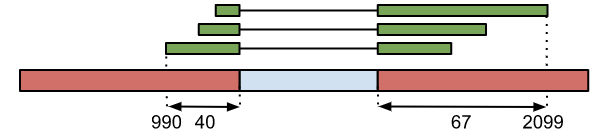

Manipuler des fichiers
Contents
Manipuler des fichiers#
Télécharger et décompresser un fichier#
Pour le téléchargement, on pourra utiliser par exemple la commande
wget.Pour la décompression on utilisera la commande
gunzipsi le fichier a été compressé avec l’algorithmegzip(extension .gz)
# On se déplace dans annotations
# remplacer <project>
# cd /shared/projects/<project>/annotations/hg38
cd /shared/projects/form_2022_32/coursLinux/demo/annotations/hg38
mkdir bed; cd bed
# On télécharge le fichier
wget https://zenodo.org/record/5716151/files/hg38_exons.bed.gz
--2022-11-13 15:34:44-- https://zenodo.org/record/5716151/files/hg38_exons.bed.gz
Resolving zenodo.org (zenodo.org)... 188.184.117.155
Connecting to zenodo.org (zenodo.org)|188.184.117.155|:443... connected.
HTTP request sent, awaiting response... 200 OK
Length: 8838009 (8.4M) [application/octet-stream]
Saving to: ‘hg38_exons.bed.gz’
100%[======================================>] 8,838,009 --.-K/s in 0.1s
2022-11-13 15:34:44 (79.3 MB/s) - ‘hg38_exons.bed.gz’ saved [8838009/8838009]
# Le fichier compressé (finit par ".gz"). Il pèse 8,4Mo.
ls -lh
total 68K
-rw-rw----+ 1 tdenecker tdenecker 8.5M Oct 25 21:57 hg38_exons.bed.gz
# Vérification du type de fichier
file hg38_exons.bed.gz
hg38_exons.bed.gz: gzip compressed data, was "hg38_exons.bed", from Unix, last modified: Tue Nov 20 11:29:21 2018
# On le décompresse
gunzip hg38_exons.bed.gz
# Le fichier a perdu l'extension gz. Il pèse 81Mo.
ls -lh
total 65M
-rw-rw----+ 1 tdenecker tdenecker 81M Oct 25 21:57 hg38_exons.bed
# Vérification du type de fichier : il a changé.
file hg38_exons.bed
hg38_exons.bed: ASCII text
Le fichier hg38_exons.bed#
Contient les coordonnées (début/fin) des exons humains au format BED.
Focus sur le format BED#
Type de fichier#
Annotation
Signification du nom#
Browser Extensible Format
Qui le génère#
Les outils d’annotation, TopHat
Qui le lit#
Les visualisateurs, vous
Remarque#
Le format BED est un format multi-forme, qui peut être utilisé dans beaucoup de contextes.
Exemple 1 (simple)#
chr1 100 200 peak_1 123
Explications#
Chaque ligne est une annotation. Les informations sont tabulées, ie. chaque ligne contient un nombre fixe de colonnes (ici, 5), séparées par des tabulations.
Le format BED est utilisé pour beaucoup de types d’annotations, comme les régions MACS :
(chr1) le nombre du chromosome (ou du scaffold)
(100) position extrême en 5’
(2099) position extrême en 3’
(peak_1) nom systématique de la jonction
(123) score pour cette région
Dans d’autres contextes, on peut ne trouver que les 3 ou 4 premiers champs.
Exemple 2 (jonctions entre exons)#
chr1 990 2099 JUNC00001560 3 + 990 2099 255,0,0 2 40,67 0,1042
Explications#
Ici, le format contient 12 colonnes (BED12): 6. (chr1) le nombre du chromosome (ou du scaffold) 7. (990) position extrême en 5’ des lectures chevauchant la jonction 8. (2099) position extrême en 3’ des lectures chevauchant la jonction 9. (JUNC00001560) nom systématique de la jonction 10. (3) nombre de lectures couvrant la jonction 11. (+) brin 12. (990) même chose que la colonne 2 13. (2099) même chose que la colonne 3 14. (255,0,0) code couleur (RVB) 15. (2) pas important 16. (40,67) taille maximum des lectures couvrant l’exon à gauche et à droite de l’intron. 17. (0,1042) pas important

Pour en savoir plus#
Documentation : http://genome.ucsc.edu/FAQ/FAQformat.html#format1
Notre fichier#
chr1 100000636 100000739 RNU6-1318P|ENST00000365389|snRNA . -
chr1 100007033 100007156 AC118553.2|ENST00000638792|protein_coding . +
chr1 100007033 100007156 AC118553.2|ENST00000638968|nonsense_mediated_decay . +
chr1 100007033 100007156 AC118553.2|ENST00000639037|protein_coding . +
chr1 100007033 100007156 AC118553.2|ENST00000639040|nonsense_mediated_decay . +
chr1 100007033 100007156 AC118553.2|ENST00000639171|nonsense_mediated_decay . +
chr1 100007033 100007156 AC118553.2|ENST00000640238|nonsense_mediated_decay . +
chr1 100007033 100007156 AC118553.2|ENST00000640357|nonsense_mediated_decay . +
chr1 100007033 100007156 SLC35A3|ENST00000370153|protein_coding . +
chr1 100007033 100007156 SLC35A3|ENST00000370155|nonsense_mediated_decay . +
Note
Positions Start et End sont toujours données par rapport au sens 5’/3’ du brin +. Les coordonnées sont ‘zero-based, half-open’ [0, n) (une autre convention est l’intervalle clos [1,n])
Visualiser le contenu d’un fichier#
On utilisera
lessoumore(*) pour parcourir le fichier ligne à ligne (logiciels de type ‘pager’).On utilisera
headoutailpour voir les n premières ou n dernières lignes d’un fichier.La commande cat permet de renvoyer tout le contenu d’un fichier sur la sortie standard (l’écran).
+ c (cancel) pour arrêter. Les raccourcis clavier dans less sont les mêmes que pour la commande man.
() Less does more or less the same as more, but rather more than less, I like less more than more (Jacques van Helden) () Un avantage de less est qu’on peut remonter en arrière; avec more … c’est mort (Marc Deloger)
Raccourcis dans less
↑ : se déplacer vers le haut.
↓ : se déplacer vers le bas.
> : Aller à la première ligne.
< : Aller à la dernière ligne.
/chr : pour chercher le terme ‘chr’ (puis touche ‘enter’).
n : (next) pour chercher la prochaine occurrence de ‘truc’.
p: (previous) pour chercher l’occurrence précédente de ‘truc’.
q : pour quitter.
Exercices#
Utilisez la commande
headpour regarder les 10 premières lignes du fichier hg38_exons.bedUtilisez la commande
tailpour regarder les 10 dernières lignes du fichier hg38_exons.bedPromenez-vous dans le fichier hg38_exons.bed en utilisant la commande less. Quittez
less.Renvoyer le contenu du fichier à l’écran avec
cat.
Note
Si la lecture vous fatigue, utilisez <ctrl> + c (cancel) pour arrêter le défilement. *Attention ce truc ne semble pas bien marcher à travers Jupyter Lab
Solutions#
head -n 10 hg38_exons.bed
chr1 100000636 100000739 RNU6-1318P|ENST00000365389|snRNA . -
chr1 100007033 100007156 AC118553.2|ENST00000638792|protein_coding . +
chr1 100007033 100007156 AC118553.2|ENST00000638968|nonsense_mediated_decay . +
chr1 100007033 100007156 AC118553.2|ENST00000639037|protein_coding . +
chr1 100007033 100007156 AC118553.2|ENST00000639040|nonsense_mediated_decay . +
chr1 100007033 100007156 AC118553.2|ENST00000639171|nonsense_mediated_decay . +
chr1 100007033 100007156 AC118553.2|ENST00000640238|nonsense_mediated_decay . +
chr1 100007033 100007156 AC118553.2|ENST00000640357|nonsense_mediated_decay . +
chr1 100007033 100007156 SLC35A3|ENST00000370153|protein_coding . +
chr1 100007033 100007156 SLC35A3|ENST00000370155|nonsense_mediated_decay . +
tail -n 10 hg38_exons.bed
less hg38_exons.bed # q to quit
cat hg38_exons.bed
Compter les lignes d’un fichier#
Utiliser la commande wc (word count) avec l’argument -l (line).
wc -l hg38_exons.bed # 1261870 exons
1261870 hg38_exons.bed
Extraire des colonnes#
Pour extraire des colonnes on utilisera la commande
cutavec l’argument-f(field)Les colonnes du fichiers doivent nécessairement être séparées par une tabulation (sinon utiliser l’argument
-dpour ‘delimiter’)
Tip
Si la lecture vous fatigue, utilisez
# extraire la colonne 1
cut -f 1 hg38_exons.bed
# extraire les colonnes 1 et 2
cut -f 1,2 hg38_exons.bed
# cut ignore malheureusement l’ordre indiqué
cut -f 2,1 hg38_exons.bed
# extraire la colonne 3 jusqu'à 5
cut -f 3-5 hg38_exons.bed
# extraire depuis la colonne 3 jusqu'à la fin de la ligne
cut -f 3- hg38_exons.bed
Trier un fichier#
Il faut utiliser la commande sort (tri alphabétique par défaut).
-k(key): e.g-k1,1utiliser les caractères de la kolonne 1 à 1 pour le tri.-k2,2nrutiliser les caractères de la colonne 2 à 2 pour faire un tri numérique (entiers) en inversant l’ordre (reverse).-k2,2g(–general-numeric-sort) pour effectuer, sur la colonne 2, un tri sur des valeurs décimales.
# Tri alphabétique en considérant tous les caractères de chaque ligne
sort hg38_exons.bed
# Tri par chromosome (colonne 1)
sort -k1,1 hg38_exons.bed
# Trier le fichier sur la colonne 1 (chromosomes, tri alphabétique)
# puis par colonne 2 (starts, tri numérique):
# Trier les lignes par coordonnées
sort -k1,1 -k2,2nr hg38_exons.bed